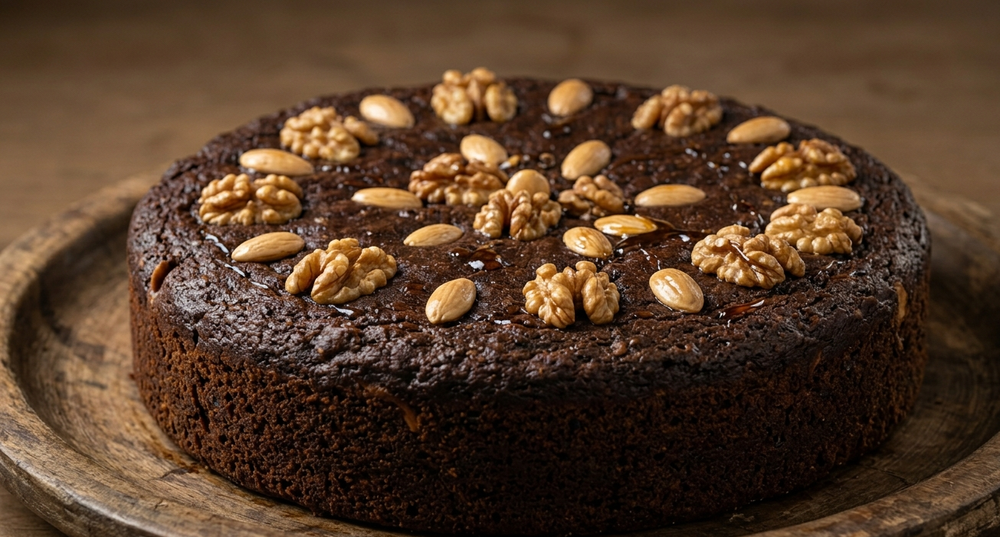

Home
Bolo de Mel (Honey Cake)

Description
Bolo de Mel is a traditional cake from Madeira Island, Portugal,
especially popular during Christmas time. It is made with honey or
sugarcane molasses, spices, nuts, and dried fruits. The cake has a rich,
dense texture and a deep, warm flavor. It can last for weeks and is often
enjoyed in small pieces over time.
Ingredients
- 250g honey or sugarcane molasses
- 200g sugar
- 200g butter
- 2 eggs
- 500g flour
- 1 teaspoon baking soda
- 1 teaspoon cinnamon
- 1 teaspoon mixed spices (optional)
- 100g chopped nuts (walnuts or almonds)
- 100g raisins or dried fruits
Steps
- Preheat the oven to 180°C.
-
Melt the butter and mix it with the honey (or molasses) and sugar.
- Add the eggs and mix well.
- In a separate bowl, combine flour, baking soda, and spices.
- Gradually add the dry ingredients to the mixture.
- Fold in the nuts and dried fruits.
- Pour the batter into a greased baking pan.
- Bake for 40-50 minutes until cooked through.
-
Let it cool before serving. The flavor improves after a day or two.